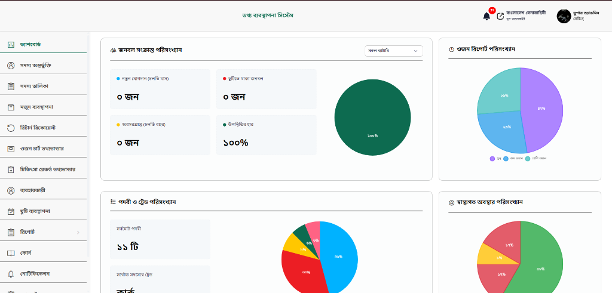

01Context
An Army unit needed a system to manage its personnel and equipment records, which had previously been kept on paper.
The unit’s staff (commanders, clerks and quartermaster staff) described their processes precisely, but in military administrative terms the developers could not build from directly. My job at Kainotomia Pte Ltd was to work between the unit and our development and design teams.
02My role
I worked as the Business Analyst across the project, sitting between the Army unit and our internal delivery teams across five core responsibilities:
Role map: sitting between the Army unit and the delivery teams
Simplified illustrationBangladesh Army unit
Operational stakeholders defining unit workflows and reviewing rules.
Commanders, clerks and quartermaster staff
Business Analyst (my role)
What passed through me between the unit and the delivery teams:
Gathered across five meetings with the unit and translated into system rules.
Documented unit review feedback in a numbered log and routed changes to build.
Worked closely with UI designers on forms, dashboard charts and PDF layouts.
Checked delivered features against what the unit had agreed.
Kainotomia Pte Ltd teams
Internal engineering and interface teams building the system.
Built the personnel and equipment modules from agreed system rules.
Designed the visual outlook and interface structure.
-
1 Client communication
I was responsible for communication with the unit throughout the project.
-
2 Requirements gathering
Across five meetings with the unit, I gathered the requirements for both the personnel and equipment modules. [VERIFY: wrote each as an exact rule (trigger, frequency, approver)]
-
3 Feedback gathering
I gathered the unit’s feedback during review sessions and documented each change request in a numbered feedback log mapped to specific registration steps, modules and dashboard views, then assigned each item to the responsible developer or UI designer.
-
4 UI collaboration
I worked closely with the UI designers on the visual outlook of the system, relaying the unit’s review feedback on form controls, dashboard visualizations, font readability, Army-specific terminology and downloadable PDF soldier biodata layouts.
-
5 Delivery assurance
I made sure the development team built what the client asked for. [VERIFY: checked delivered features against what the unit had agreed]
03Approach
Requirements lifecycle
Simplified illustration-
Stage 1
Meetings
Five requirement and review meetings held with the unit.
-
Stage 2
Requirements
Personnel and equipment processes structured into system rules.
-
Stage 3
Unit review and feedback
Unit reviewed draft requirements and raised change requests.
-
Stage 4
Confirmation
Revised rules confirmed with users before going to build.
-
Stage 5
Design and build
Worked with UI designers and developers as modules were built.
-
Stage 6
Check against agreed requirements
Checked delivered features against what the unit had agreed.
-
Stage 7
Delivery
System delivered and placed in use by the unit.
Personnel module
I gathered the unit’s personnel management requirements and confirmed each revised rule with the users before it went to development. [VERIFY: personnel requirements included reminders before a mandatory training deadline lapses and before a temporary medical category falls due for review]
Equipment module
I gathered the requirements for tracking equipment across the unit. [VERIFY: every item issued, handed over or written off leaves a record with supporting documents; a new quartermaster sees what the predecessor held]
Nominated heir for the salary account (one example of questioning a requirement)
In the nominated-heir field for the soldier’s salary account, the unit specified that a wife must always receive exactly 50%. I questioned this and raised it with the unit, which removed the fixed share immediately. The field was built open, so each soldier sets their own nominations. [VERIFY: reason — a fixed share does not fit every soldier, because family circumstances differ and inheritance shares under Bangladesh's personal laws vary with religion and family structure]
Nominated-heir field
Simplified illustrationSpouse share fixed at 50%
Initial requirement fixed a 50% share for a wife on every salary-account nomination record.
Share left open; each soldier sets their own nominations
Fixed share removed after review with the unit; the field was built open.
Interface
Working with the UI designers, I translated the unit’s review feedback into interface updates across the registration forms and main dashboard: modernizing the dashboard layout, increasing the overall font size for readability, adding dashboard charts for trade breakdown and personal training completion, formatting a downloadable PDF soldier biodata sheet, replacing fixed dropdowns with open input fields where entries varied, and updating field labels to match Army terminology.
System login portal (unit identifier and badge redacted)
Sanitized screenshot
Main dashboard view (unit identifier and badge redacted)
Sanitized screenshot
04Constraints and confidentiality
Because this system was built for a defence client, strict disclosure rules apply to this write-up:
Confidentiality boundaries
Governance rules- Sanitized login and aggregate dashboard only
- Only the login screen and aggregate dashboard view (both with the unit badge and unit identifier removed) are shown; no individual personnel records, salary-account forms or equipment logs are displayed.
- No unit name, number or location
- Bangladesh Army is named with approval, without identifying the specific unit or location.
- No personnel data
- No real soldier records, salary-account nominations or equipment logs appear anywhere on this site.
- No security classification markings
- No internal military abbreviations or classification markings are used.
05Outcome
The system has been delivered and is in use by the unit.
06What I learned
Good requirements protect the people a system records, not only the people who manage it.
[PLACEHOLDER: what I would do differently]
07Tools and method
Requirements meetings, the requirements outline, Software Requirements Specifications and a numbered unit feedback log.